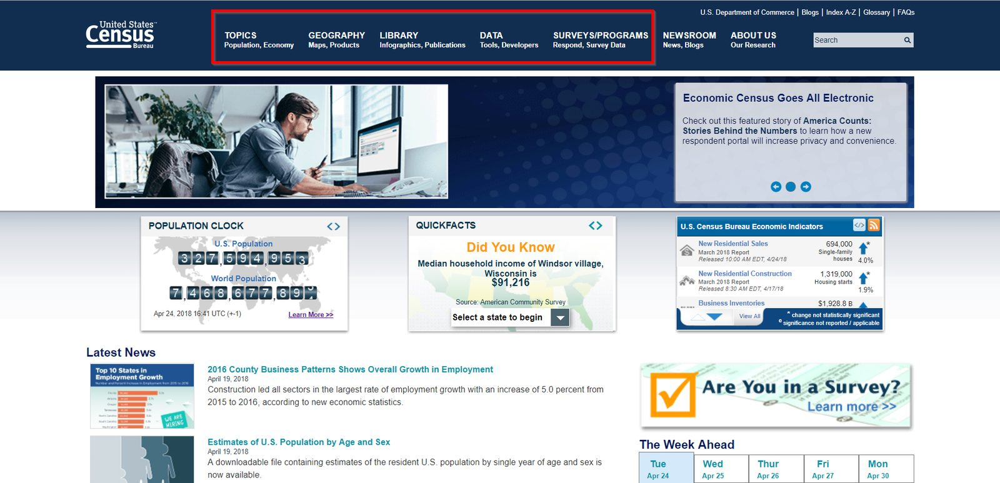
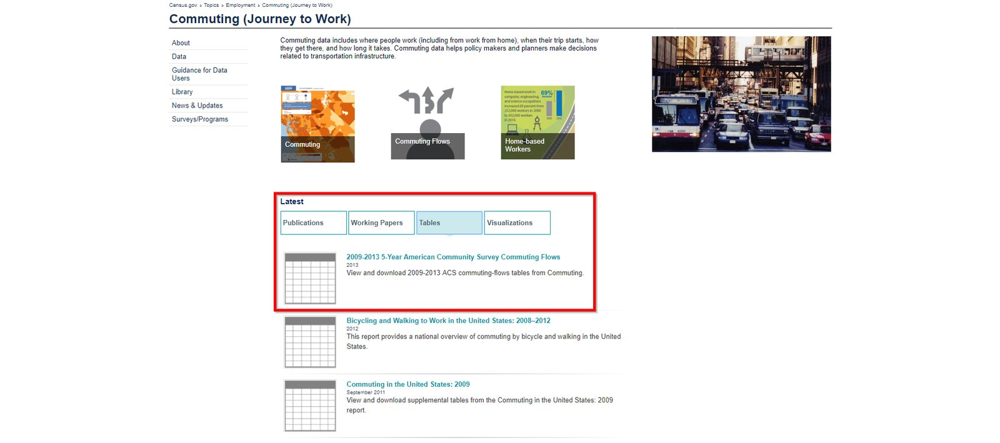
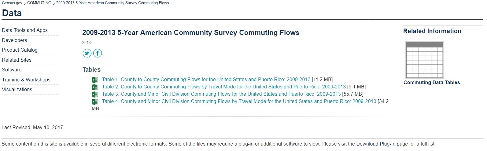
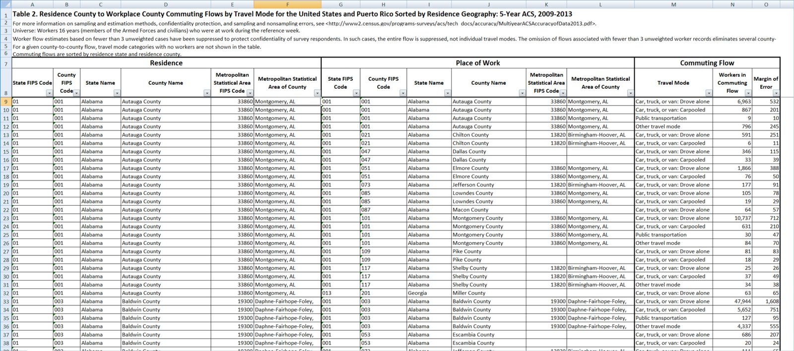
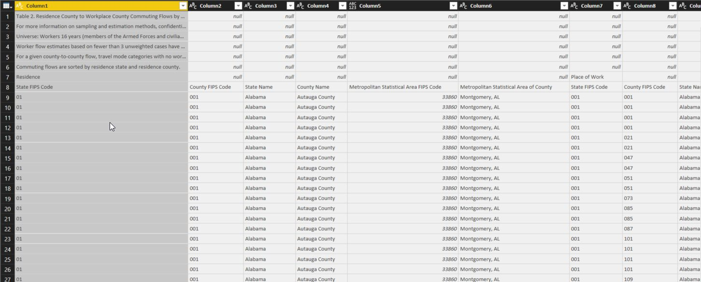
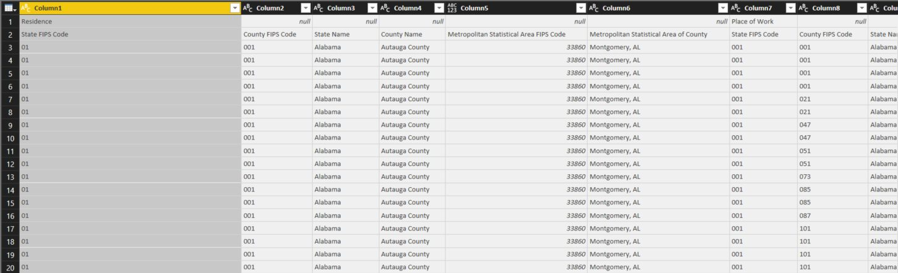
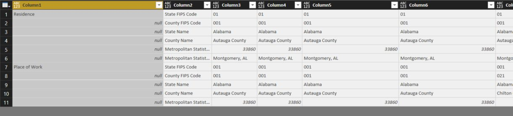
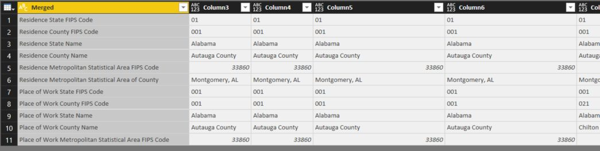
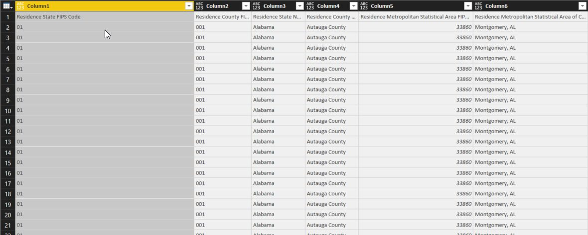
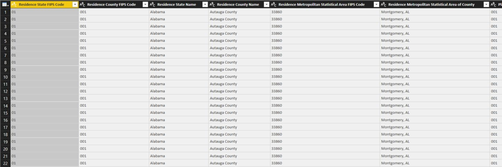

Integrating public data into your analysis can provide powerful insights. However this task rarely comes easily, as public data tends to come in an awkward format or a different format to the one you prefer to work with. We’ll show you how to do this in 3 steps
- Download a dataset on commuting patterns from the US census bureau website.
- Load census data into Power BI
- Use the Query Editor to transform the raw dataset
Step 1: Download US Census data
The United States Census Bureau is one of the most prominent sources of open data available. Their website is here, and is pictured below. If your company does any business at all in the USA, it’s distinctly possible that there is some data on their website that could be of use to your business.

As you can see from the menu highlighted above, there are several options for downloading data sets that are of interest to you. We are going to download a data set on commuting patterns from 2009 to 2013, which can be found under Topics > Employment > Commuting (Journey to Work). When we reach this page and select Tables, we can see a range of datasets of relevance to this topic, as we can see below.

Once we select the topic of interest, we can see there are several tables of data, all of which are available in an Excel format. In this case, we are downloading Table 2. Once we select it, the table of data is downloaded to our computer. If you are interested in following along for yourself, you can download this table from here.

Step 2: Importing into Power BI
Below we can see a screenshot of the relevant file in Excel. If you’re experienced in Power BI or a similar tool, you’ll know straight away that we’ll need to do some cleaning up before we import the census data into Power BI. The first six rows are explanatory text, which we don’t need. There are also 4 more lines of similar text at the bottom of the file. The column headers are effectively spread over rows 7 and 8, and the headers in row 7 consist of merged cells. This is a typical example of a data file designed purely for use in Excel. Before we import the census data into Power BI Desktop, we will need to clean up the structure in the Query Editor.

The dataset records data on commuting flows, and you can see it is divided into three main sections: Residence, Place of Work and Commuting Flow. Each row of this table records the number of people who travel from one county to another by a particular mode of transport. Most combinations of counties that feature in commutes are included, except for some combinations with few or no commuters. As a result, this is a large dataset, with over 100,000 rows.
Also, note that some files from the US census website, including this one, are downloaded as xls files. xls is an older Excel file format, and Power BI can throw up errors when importing xls files. This happens when Power BI Desktop is 64-bit, but Excel is 32-bit. In order to avoid any issues when importing into Power BI, you may want to open the file in Excel first, and save the file as an xlsx file.
Step 3: Cleaning the file in the Query Editor
To get this file into a sensible format for data analysis, we’ll import the file into Power BI Desktop then open the Query Editor to clean the file up. Below we see an image of the query for this file in the Query Editor.

As you can see, the first six rows of the query consist of text that we do not want. Our first action is to select Remove Rows from the Home menu, and remove the top six rows from the query. We also remove the bottom five rows, as they contain a blank row and similar text. This gives us the query shown below.

At this stage, you’ll see that the column headers are now found in the first two rows. Notice that many of the columns in row 1 have null values. This is because the relevant cells were merged in the Excel file, and the value of that merged cell has only been copied into a single cell in the query. We would like to solve this by filling the values in row 1 to the right. For example, Residence would appear in all the columns from Column1 to Column6. However, we cannot do this directly. We can fill cells up or down, but not left or right.
To deal with this, we transpose the query from the Transform tab. This converts rows to columns and columns to rows, as we can see below. Note that transposing can be a memory-intensive operation, and with a large file like this, it may take a few seconds for this action to complete.

Now the column headers are in the first two columns of the query. We can fill down in column 1 to populate the entire column, and we’ll also merge the first two columns, so that all our column header data is in a single column. The query will then look like this.

We then transpose the table again to return to the original layout.

Our query is now almost complete. The only remaining issue is that the columns do not have proper titles. We can solve this by selecting Use First Row as Headers from the Transform tab. However, doing this will also change the column types in a way that we do not want. For example, the codes in the first two columns are converted to numbers, when we would prefer to treat them as text. As a result, we replace the Changed Type step with one of our own. All the columns from the residence and place of work sections are text, while the last two columns in the commuting flow section are whole numbers. Our final query looks like this.

Conclusion
Public data is definitely a useful resource for many businesses. As we have seen here, public data can often be obtained pretty easily. However, we have also seen that when you obtain data from an external source, there are no guarantees that it will be in an easy-to-use format, and as a result, you may need to spend some time getting the data into the format that you want. If you have a good understanding of a tool like the Query Editor, then this work can be fairly straightforward, allowing you to unlock the potential of public data in your business.